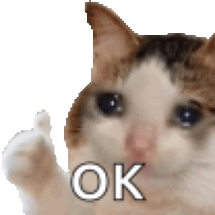
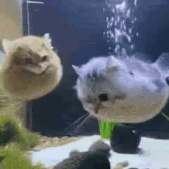

dear terimakaashi,
disclaimer: tolong baca ini ketika situasi pikiran dan hatinya sedang baik yaa (plis 😬🙆🏻♂️)
haii oliiiiii :)
selamat pagi dan selamat malam 😬 belum tau kapan kamu baca ini, tapi aku harap kamu dalam keadaan sehat mau itu badannya dan juga hatinya 🙆🏻♂️ aku berdoa semoga oli dalam keadaan yang baik ketika baca ini yaa :) 🦁
tolonggg bangettt inii dijaga makannya, plis banget inii ya Allah at least 2x sehari, dan itu makanan berat yang bergizi ya ya ya :<
terus juga begadangnya dikurangin!!! aku gak peduliii sama alasannya apa, tapi setidaknya pikirin aku juga yaa yang khawatir sama kamu! 😤

oli... :) aku suka manggil nama oli, kalau manggil rasanya hangat banget wkwkwkwk (insert sticker ngeheheee) 🙂↕️
terima kasih yaa, untuk banyak hal 🙂↕️ terutama apa yang sudah kamu tulis di chat dari kemarin-kemarin 🙆🏻♂️
terima kasih sudah hadir dan ada wujudnya 🐈⬛ terima kasiiih karena sudah datang, terima kasih karena suka nanyain, dan terima kasih karena kamu melihat aku... aku sangat bersyukur :)
olii... :) terima kasih sudah peduli yaaaaa :)

yes‼️ aku nulis ini lama banget wkwkwk, yaahh kalau beralasan sih karena aku perlu waktu buat nuangin apa yang aku pikirin dan rasain 🤔🙂↕️ walaupun aku masih bingung mau ngomong apa, sejujurnya aku juga masih mengolah apa yang aku rasain, and i think it's a good thing, karena aku jadi bisa lebih memahami lagi, so it is okay 🙆🏻♂️
insyaAllah aku baik-baik saja, jadi aku harap dan berdoa kamu juga dalam keadaan yang sama baiknya yaa. lalu, at this point sebenernya aku juga sudah berdamai dengan apa yang aku rasain sebelumnnya, jadi aku pikir gak perlu buat nulis tentang apa yang sudah terjadi, cuman aku juga menghargai 'honesty', aku belajar sesuatu hari ini (tanggal 27 waktu aku nulis ini). "honesty won't hurt me, but silence does", konteksnya sih singkatnya aku sangat senang dan menghargai apapun yang diceritain dari oli, mau baik dan buruknya, apapun itu, jadi dengan alasan itu aku juga melakukan hal yang sama, aku harap dengan nulis ini kamu bisa lebih mengerti aku juga yaa, jadi aku izin buat mencurahkan isi kepala aku tentang apa yang terjadi kemarin-kemarin, ngehehehee 🙆🏻♂️🙂↕️😤

sebenarnya aku kaget (langsung kosong pikirannya), waktu kamu tiba-tiba balas chat terus ngasih tau apa yang sedang terjadi dengan kamu. disitu aku merasa gak adil, kenapa gak ceritain dulu dari awal, kenapa langsung ada pernyataan, dan yang terakhir kenapa langsung ada keputusan. aku merasa gak adil karena aku gak punya kesempatan buat tau dulu, bahkan buat menyampaikan apa yang aku rasain. disitu aku bingung, perasaan aku campur aduk, aku sedih, aku kesal, aku merasa bersalah, dan lain-lain. aku gak tau harus ngomong apa lagi disitu, aku bingung, makanya cuman ngomong "okay, terus oli maunya gimana?" dan taunya dijawab dengan pernyataan. mungkin jadi memperjelas sih (it helps), tapi at that time, aku kosong pikirannya, kaget wkwkwk. sedang banyak hal yang terjadi dalam waktu yang bersamaan waktu itu wkwkw 🙂↕️
aku sudah nulis di chat sih, tapi memang walaupun aku paham dengan maksud yang kamu tulis saat itu, "emang aku kurang jahat apa ya?" saat itu aku mikir pertanyaan ini, karena perasaan 'being too much' itu gak enak, kayak perasaan penolakan atas diri aku yang karakternya kayak gini, menjadi beban untuk orang lain atas apa yang ada dari aku. membaca variasi kata "burden" waktu itu rasanya cukup bikin sedih sih 😬 buat aku sendiri oli sudah memeberikan banyak hal untuk aku, dan ketika kamu bilang "aku gak selalu bisa memberi atau memberi kembali" itu kayak disuguhin makanan di meja tapi pas mau dimakan ditarik lagi. kayak kado yang minta dibalikin lagi. kayak selama ini apa yang aku terima dari oli, semua hal baik dan buruknya minta diambil lagi gitu.
"you are enough", aku ingin sekali ngomong itu, kamu itu cukup. tapi mungkin aku cukup bodoh karena bisa aja dengan ngomong hal itu malah membuat kamu lebih sedih. aku merasa oli sudah memberikan banyak hal untuk aku, sudah melengkapi apa yang aku gak atau belum bisa, sudah memberikan banyak hal yang aku butuhkan. that time, it's kind of sad to know that i have to lose that 🙂↕️
ketika aku bilang "aku perlu memproses perasaan kehilangan", hal yang barusan aku tulis itu juga sudah termasuk. terus mungkin ada hal lainnya, kayak perasaan kehilangan seseorang untuk aku berbagi cerita, kehilangan untuk update aku udah ngapain aja hari ini, aku udah dimana, udah pulang atau belum, kehilangan untuk bisa ngasih tau hari aku lagi gimana. kehilangan juga untuk bisa dengerin cerita kamu, kehilangan untuk bisa ngasih jajanan kalau ketemu, kehilangan untuk bisa nanyain kabar kamu, dan lain-lain. mungkin pada akhirnya aku perlu memproses perasaan kesendirian, dan kesepian juga 🙆🏻♂️
setelah beberapa waktu, aku berusaha buat berkompromi dengan perasaan aku sendiri, i listened, mencoba lebih fokus buat menjaga dan memahami situasinya gimana, dan mungkin kalau waktu itu aku juga responnya belum begitu tepat, aku mohon maaf yaa... 😔
that time, insyaAllah aku juga sudah paham sama situasinya, dan aku juga mendukung keputusan apa yang diambil saat itu. that being said, aku sudah cukup menyampaikan apa yang aku rasain ditulisan ini 🙂↕️😬🙆🏻♂️
maaf ya... being older doesn't mean i'm wiser..., aku sadar masih banyak yang bisa aku pelajari dan benahi, terus ternyata aku juga perlu belajar lagi untuk lebih sabar.
terima kasih sudah membaca sampai sini. aku sendiri mungkin belum terpikirkan untuk pilihan apa yang terbaik untuk hal ini, belum terpikirkan untuk jalan tengahnya yang seperti apa juga. mungkin aku juga membutuhkan kesempatan seperti ini juga untuk lebih memahami lagi apa yang sebenarnya penting buat aku. 🙂↕️
mohon maaf ya oli, ditulisan ini banyak sekali aku cerita tentang aku sendiri, mungkin terdengengar defensif dan hanya mengeluarkan unek-unek aku, i have to admit that i'm being vulnerable here, aku mencoba untuk jujur dengan apa yang aku rasain, dan aku juga mencoba untuk menyampaikan itu dengan sebaik mungkin, tapi aku sadar mungkin masih banyak kekurangan dalam menyampaikan ini, jadi sekali lagi aku mohon maaf yaa 🙆🏻♂️
alila khairunazhifa :)
aku mendukung apa yang menjadi keputusan kamu, dan aku sangat menghargai apa yang sudah kamu usahakan, aku bersyukur, dan sangat berterima kasih untuk itu semua :)
iyaaa aku paham, at this point aku insyaAllah juga sudah baik dan lebih paham lagi. aku juga sudah cukup menyampaikan apa yang aku pikir dan rasakan. jadi aku harap segala prosesnya bisa dijalani dengan baik, dan Allah juga meridhoi semuanya yaa :)
terima kasih sudah membaca sampai sini!
take your time! take care and don't forget to be happy yaaa :)
dari mochamad thiesa nabil